正規表現の言語別チェッカー
正規表現のパターンと対象の文字列を入力するとマッチするのかどうかなどをブラウザ上で簡単にテストすることができるチェッカーツールが数多く公開されています。正規表現は使用するプログラミング言語毎に利用できる機能や仕様が少しずつ異なっており、実際に利用しようとするプログラミング言語に対応したツールを使用することが重要です。ここではプログラミング言語別に用意された正規表現チェッカーの使い方について解説します。
Python向け正規表現チェッカー
pythex は Python 環境での正規表現を試すことができるチェッカーです。
・Pythex: a Python regular expression editor
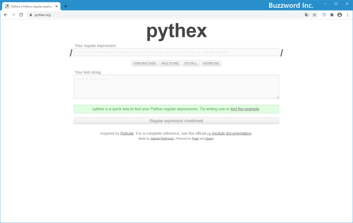
「Your regular expression」の個所に正規表現パターンを、「Your test string」の個所に対象となる文字列を入力してください。今回は次のように入力しています。
Pattern: <span>(.*)</span> String: <p>I'm riding a <span>blue</span> bicycle</p>
結果は「Match result」の個所に表示されます。緑色で表示されている部分がマッチした部分です。
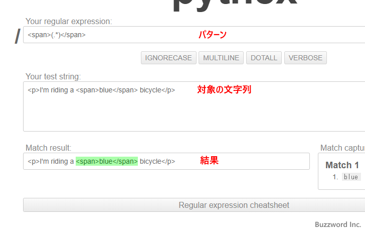
またパターンにキャプチャグループが含まれる場合は、キャプチャした結果が「Match captures」の箇所に表示されます。
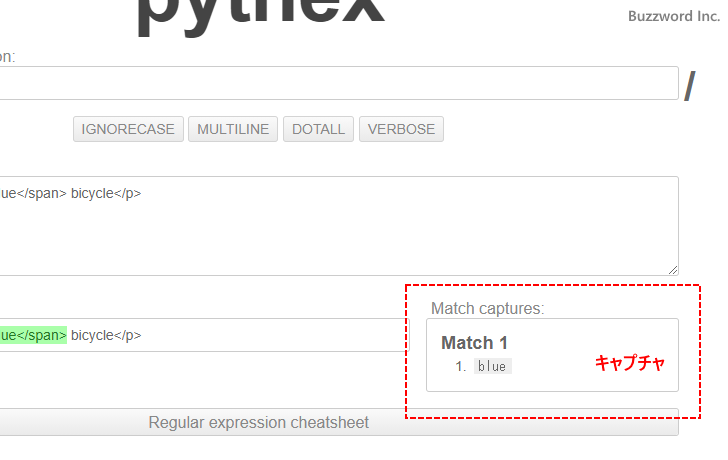
オプション(フラグ)の設定は正規表現パターンを入力するテキストボックスの下にあるトグルボタンで設定が可能です。
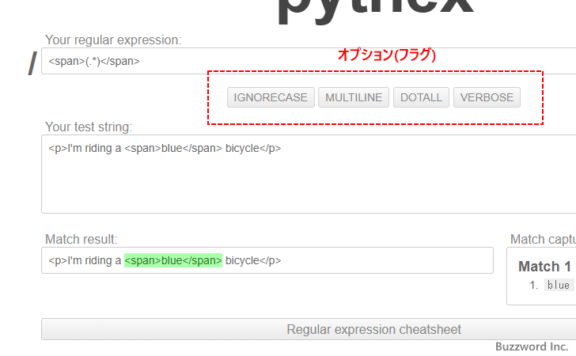
Ruby向け正規表現チェッカー
Rubular は Ruby 環境での正規表現を試すことができるチェッカーです。
・Rubular: a Ruby regular expression editor
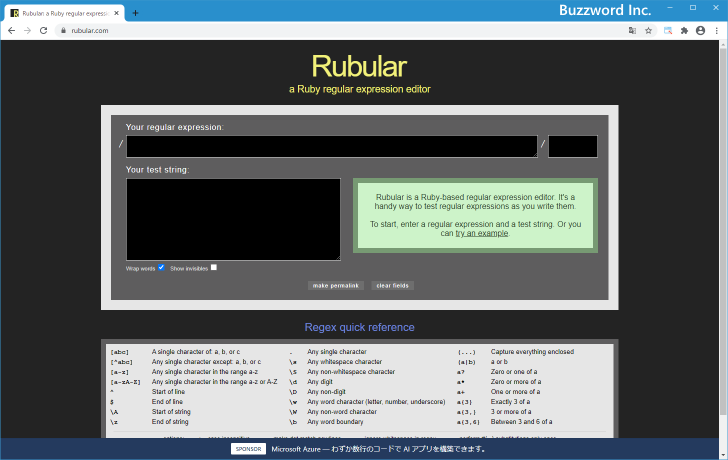
「Your regular expression」の個所に正規表現パターンを、「Your test string」の個所に対象となる文字列を入力してください。今回は次のように入力しています。
Pattern: <span>(.*)<\/span> String: <p>I'm riding a <span>blue</span> bicycle</p>
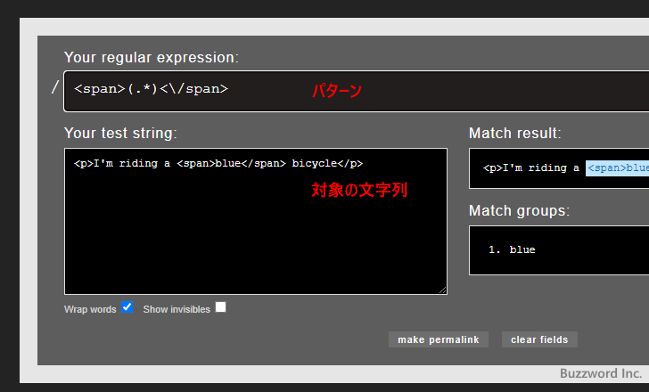
結果は「Match result」の個所に表示されます。水色で表示されている部分がマッチした部分です。またパターンにキャプチャグループが含まれる場合は、キャプチャした結果が「Match groups」の箇所に表示されます。
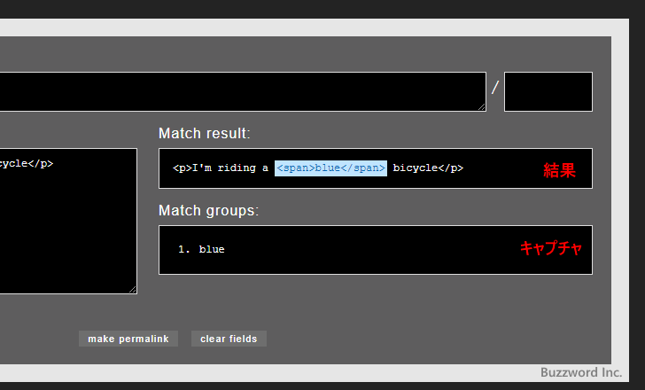
オプション(フラグ)の設定は正規表現パターンを入力するテキストボックスの右にあるテキストボックスに入力します。(i, m, x, o が入力可能です)。
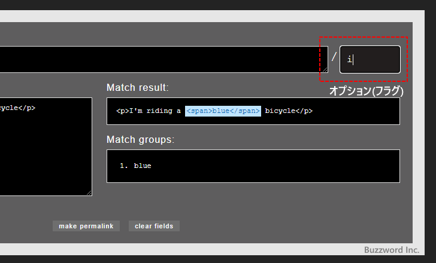
PCRE(PHP)およびJavaScript向け正規表現チェッカー
Regex101 は PCRE や JavaScript 環境での正規表現を試すことができるチェッカーです。 PCRE とは Perl Compatible Regular Expression の略で Perl5 互換の正規表現ライブラリのことです。 PHP では正規表現として PCRE を利用しています。
・Online regex tester and debugger: PHP, PCRE, Python, Golang and JavaScript
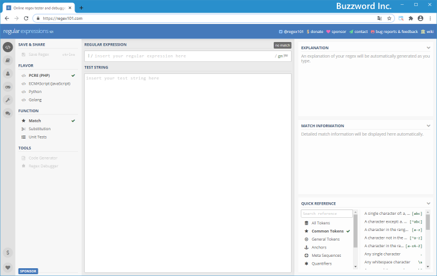
Regex101 は複数の言語向けの正規表現をテストすることができます。最初に使用する言語を選択してください。
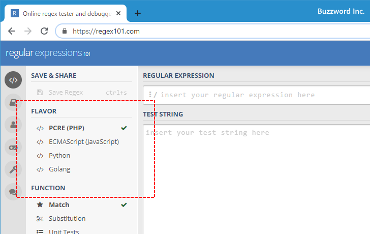
「REGULAR EXPRESSION」の個所に正規表現パターンを、「TEST STRING」の個所に対象となる文字列を入力してください。今回は次のように入力しています。
Pattern: <span>(.*)<\/span> String: <p>I'm riding a <span>blue</span> bicycle</p>
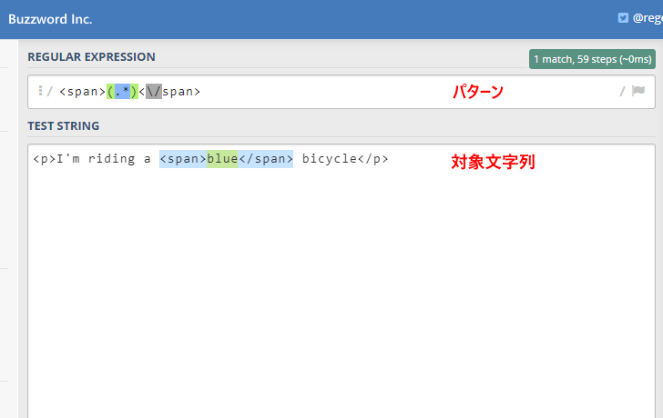
マッチした結果は対象の文字列上で水色で表示されます。またパターンにキャプチャグループが含まれる場合はキャプチャした結果が対象の文字列上で緑色で表示されます。また画面右側の「MATCH INFORMATION」 の個所でもマッチした結果やキャプチャした結果が表示されます。
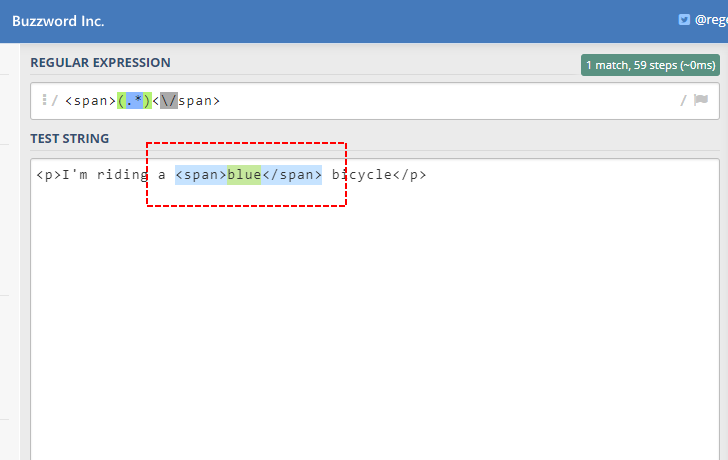
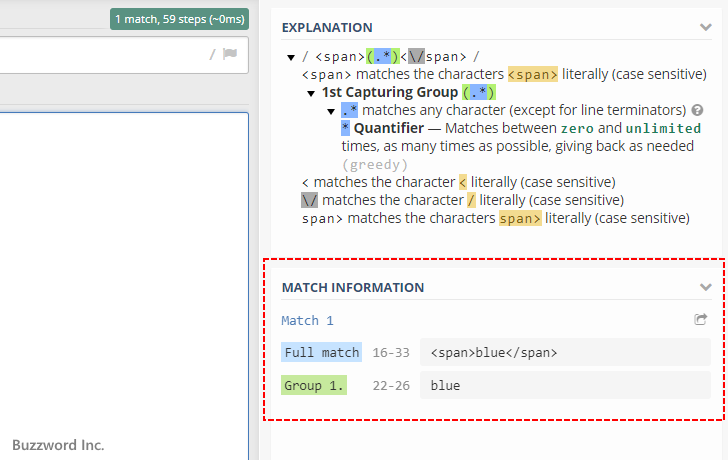
オプション(フラグ)の設定は正規表現パターンを入力するテキストボックスの右側にあるフラグアイコンをクリックしてください。オプション(フラグ)を選択することができます。
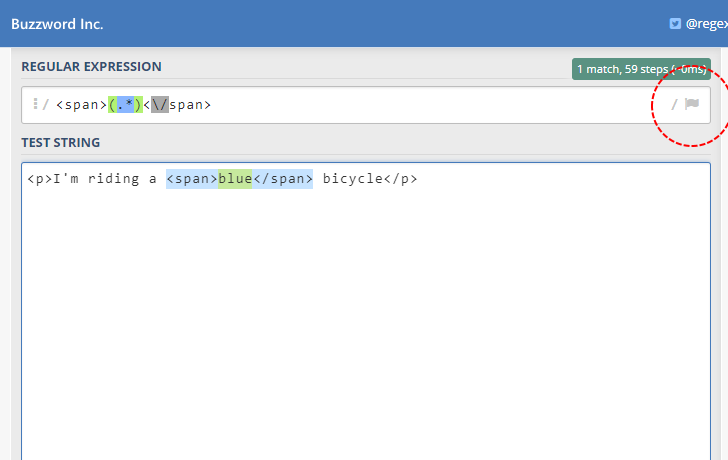
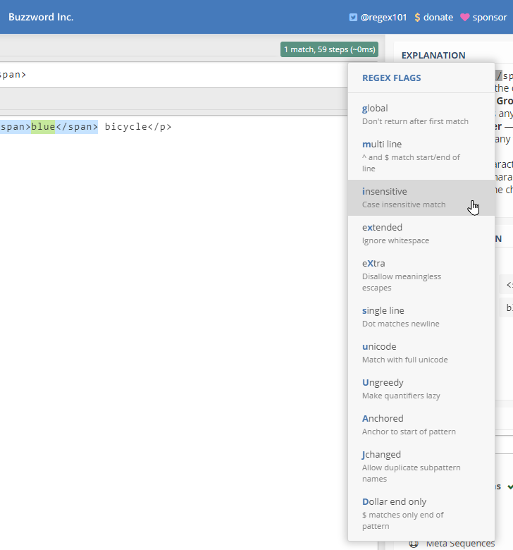
-- --
プログラミング言語別に用意された正規表現のチェッカーの使い方について解説しました。
( Written by Tatsuo Ikura )

著者 / TATSUO IKURA
初心者～中級者の方を対象としたプログラミング方法や開発環境の構築の解説を行うサイトの運営を行っています。